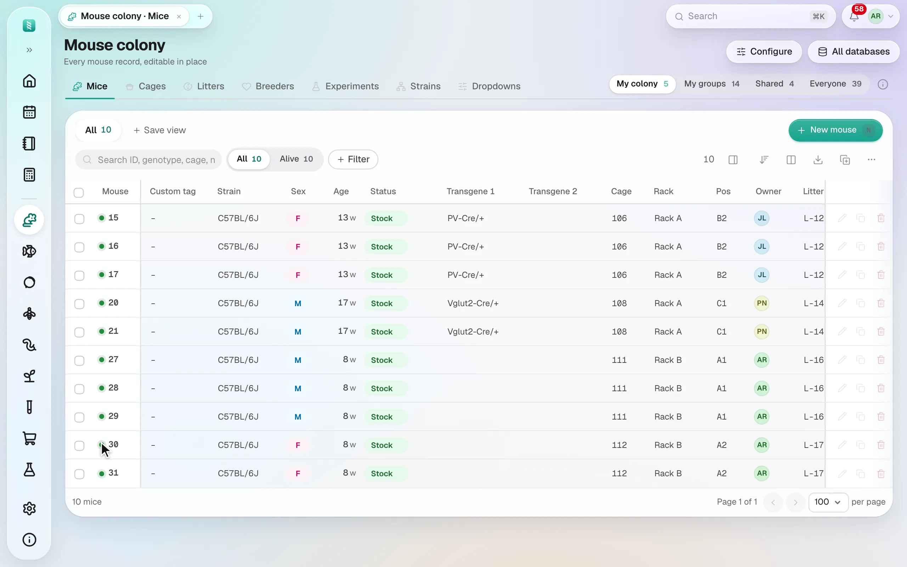
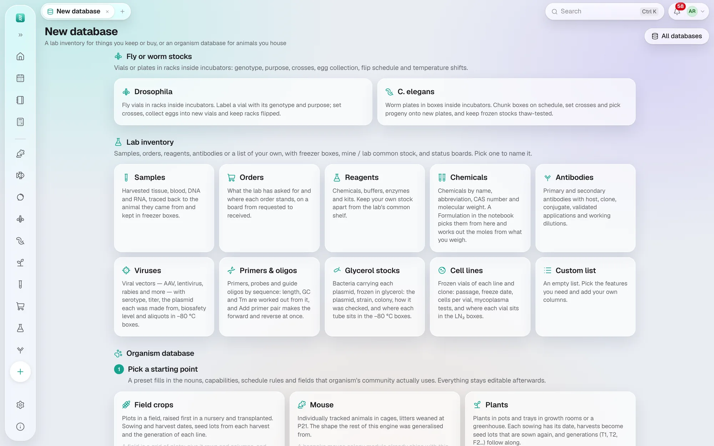
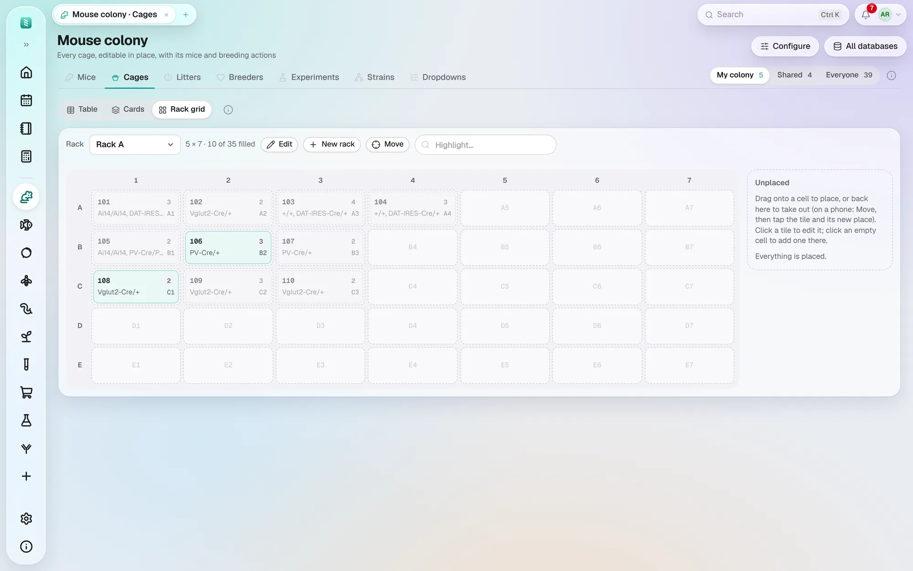
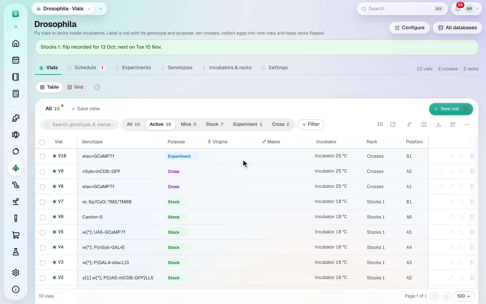
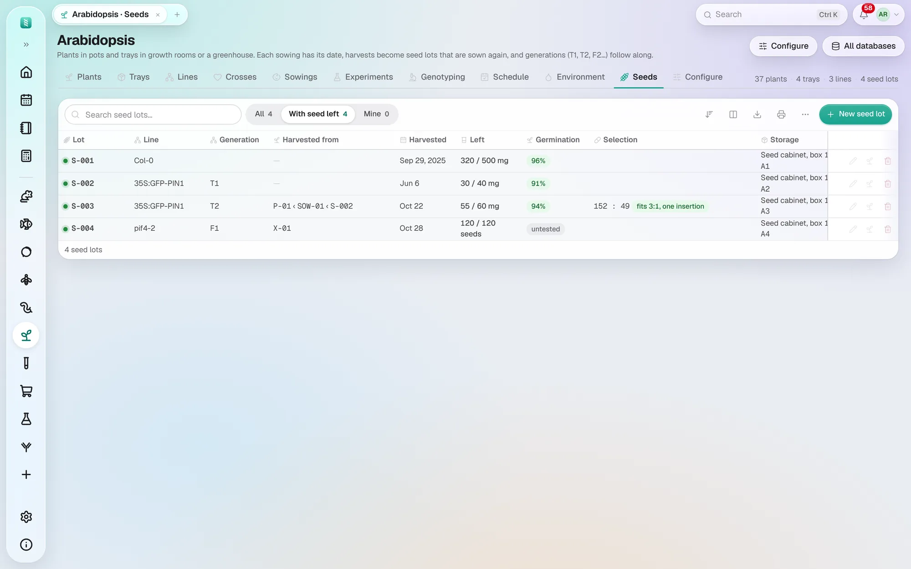
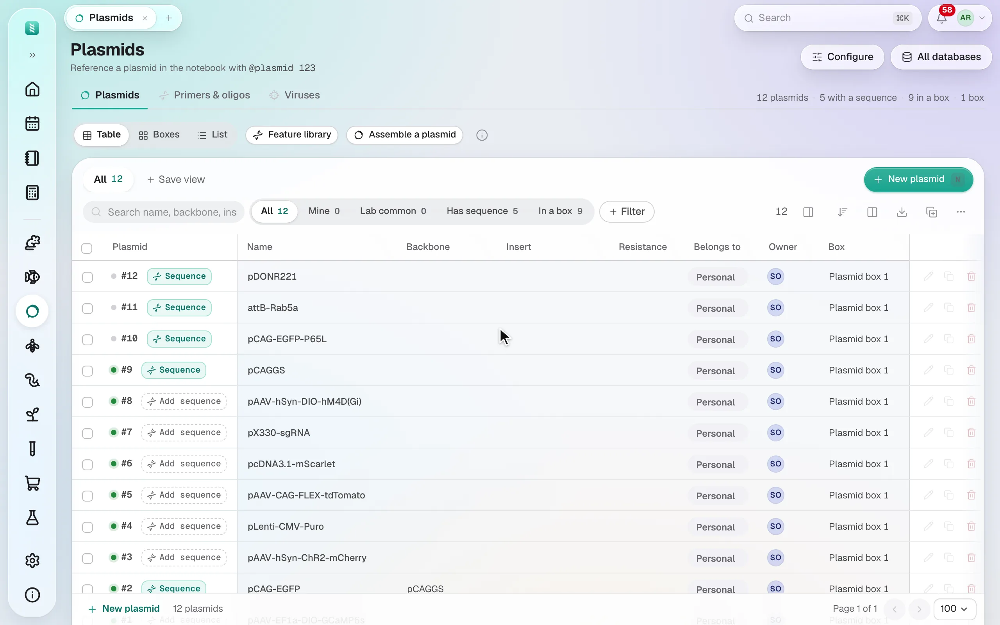
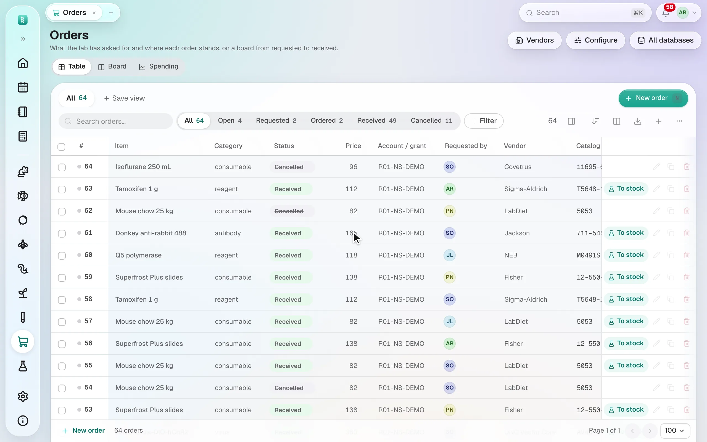
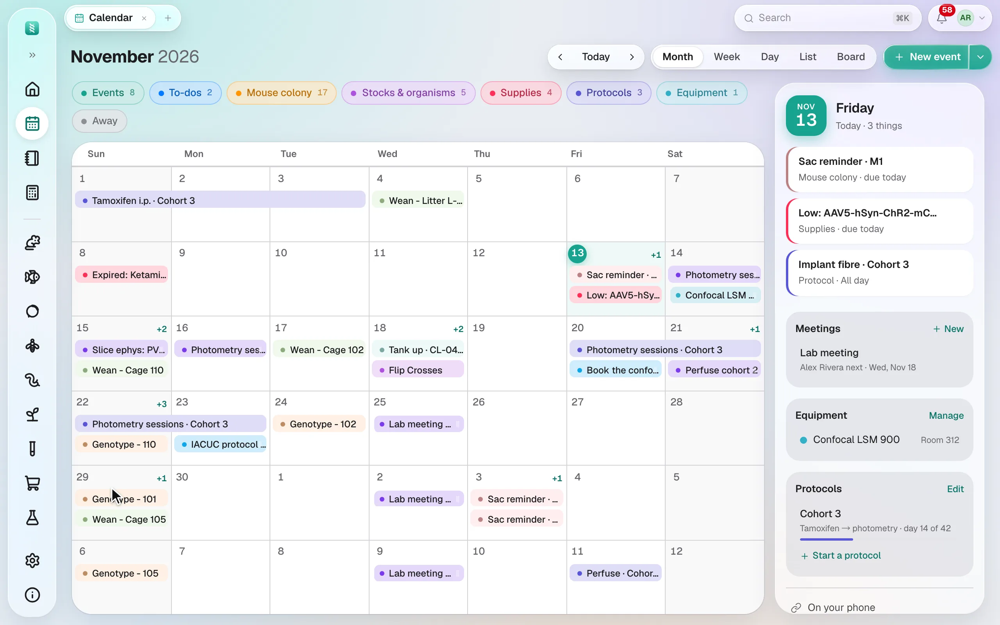
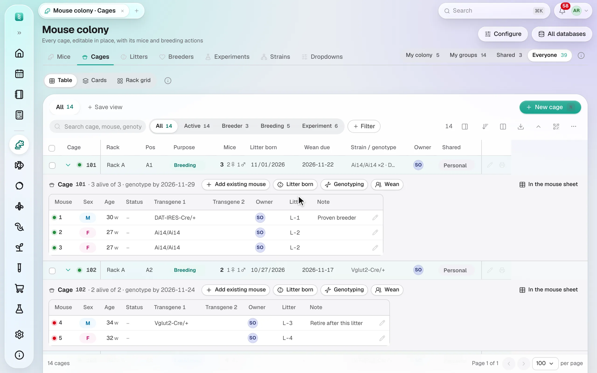
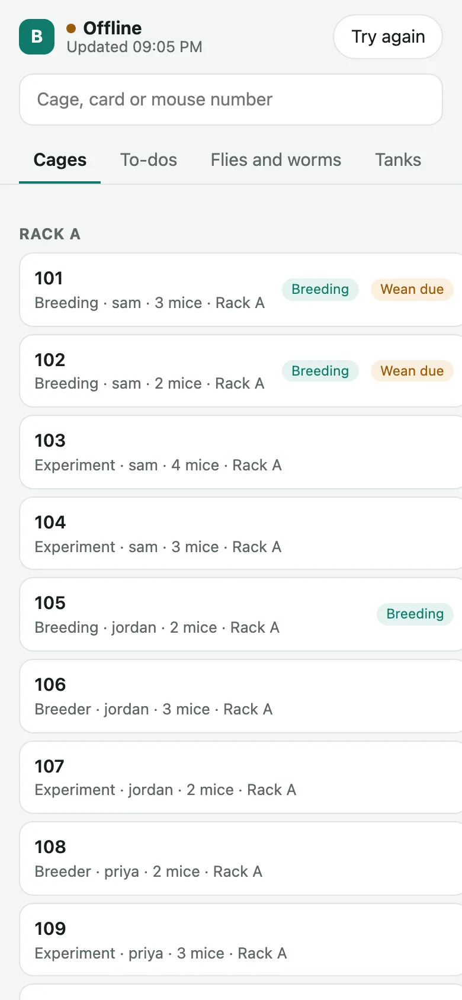

Mouse colony
Every mouse in a sheet you edit in place. Record a litter once: weaning and genotyping dates follow, and experiments dose each mouse from its weight.
Mice, fish, flies, worms and any other animal you keep, with plasmids, samples and supplies, each in a sheet you edit in place, with the calendar and the notebook beside them.

Every mouse in a sheet you edit in place. Record a litter once: weaning and genotyping dates follow, and experiments dose each mouse from its weight.

WatchMice and zebrafish come built in, with flies and worms beside them. Rats, Xenopus, axolotls, songbirds: describe yours in your own words: what you call it and its housing, whether you count individuals or groups, and the parts you need, from breeding and genotyping to health and weights. No code.

WatchD7, 4-7, G12 or plain 1 to 80: each rack keeps the labels on its real stickers. Drag a cage to move it.

Vials and plates on racks in incubators, with flip schedules that follow the temperature, crosses and frozen stocks.

Sowings in trays or plots, raised in a nursery and transplanted. Harvest seed into lots, sow them again a generation on, and see whether a T2 fits 3:1.

Upload a GenBank, FASTA or SnapGene file: its map, every base and its protein, virtual digests and gels, the lab's primers that bind and the PCR they make, site-directed mutagenesis with its primers, clones checked by sequencing, and the box each tube is in.

Orders move from requested to received, and Spending shows what they cost by person, project group or vendor against the limits you set, with one list of the lab's vendors; reagents warn before they expire, and when their quantity falls to the level you set; chemicals bring their molecular weight to the notebook's formulations; antibodies, viruses, primers, glycerol stocks and cell lines keep what matters.

Weanings and flips filled in, protocol timelines from day 0, your to-dos as cards on a Board, and a notebook you edit together and sign, its pages in topics inside topics you can share with lab mates, and paper notes filled in from a DOI or Zotero.

Print cards for cages, tanks and vials. Point any phone camera at the QR code, or tap Scan in the phone's tab bar, and that record opens, ready to edit.

In an animal facility with no signal, the Android and desktop apps keep the colony on hand: record weights, deaths, litters and weanings, and they reach the lab once you're back. A clash waits for your decision.
Tell Claude, ChatGPT, Cursor or Cherry Studio what you did, in your own words or with a photo of your notebook. It proposes the records, and nothing changes until you approve them. Add the BioManager plugin once and there's nothing to explain first.
A daily brief in a few words, then weanings, genotyping, old breeders, vials to flip and expiring stock, as cards, a timeline of the coming weeks or your racks.
Molarity, dilutions, buffer pH, A260, ligation, master mixes, ΔΔCt and more, answered as you type.
Click a cell and type; it saves as you go. Sort, filter with chips, save a view, see a row in full beside the sheet, drag the columns you need to the front, export to CSV or print.
Import from Excel matches your columns by meaning, and shows a preview before anything is saved.
Every batch can be undone, unless someone has edited those records since.
Who changed what, and exactly how, for every record. Scripts and R can use the API, as you.
⌘K from anywhere finds any mouse, plasmid, sample or page, goes to any place or asks the guide, and pages open as tabs you keep. Hover a database in the sidebar to look inside.
Members, owners and project groups, roles for animal care, and sign-in with Google, Microsoft or your institution.
Apple's Liquid Glass look over a soft wallpaper, with no title bar, a full menu bar with the usual shortcuts, light and dark, and Install and Restart when there's a new version.
For one person on one computer. Download, open, done. Your data is a file in your user folder, private to that computer, and moves to a server later in one step. Or share it on the lab's network, or join your lab's server as one of your devices.
DownloadFor the whole lab, from any browser, the Android app, or an iPhone's home screen. HTTPS, PostgreSQL, and backups that run nightly and are test-restored every week. Free on a cloud VM with Tailscale; an hour to set up, with every step written down — or hand it to an AI assistant.
Run it for your lab